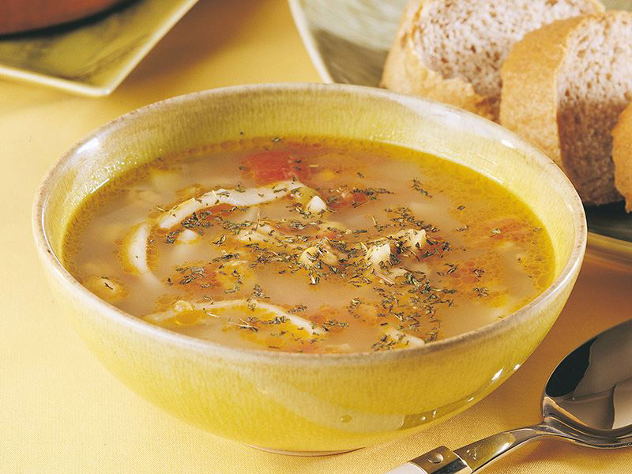
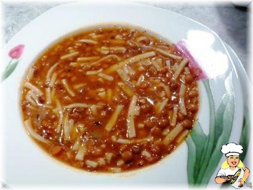

Malzemeler
- 1 su bardağı yeşil mercimek
- Haşlamak için 3 su bardağı su
- 1 orta boy kuru soğan
- 1/2 (yarım) kaşık domates salçası
- 1/2 (yarım) kaşık biber salçası
- Pişirirken ilave edilmek için 7 su bardağı su
Hamuru için;
- 1 yumurta
- 8 kaşık un
- 4 kaşık su
- 1/2 (yarım) tatlı kaşığı tuz
Nasıl Yapılır
- 1 su bardağı yeşil mercimeği, 3 su bardağı su bardağı suda (az tuz ilavesi ile) haşlıyoruz. (Dağılmadan,
hafif diri olsun)
- Bir kaseye, yumurta kırıp, tuz ve suyu ekliyoruz. 8 kaşık un ilavesi ile biraz katı bir hamur yoğuruyoruz.
- Bu hamurun birini büyük birini daha küçük 2 bezeye ayırıyoruz. Bezeleri un yardımıyla açıp, birini şeritler
halinde erişte şeklinde kesiyoruz.
- Tencereye, çok az yağ koyarak, küp küp doğradığımız kuru soğanı, ölünceye kadar kavuruyoruz. Üzerine
salçaları ilave edip, bir iki çevirdikten sonra, haşladığımız mercimeği ilave ederek, 7 su bardağı su
ekliyoruz. Tuzunu da damak tadımıza göre belirleyip, kaynamaya bırakıyoruz.
- Bu arada, diğer bezeyi, büyükçe parçalara ayırıp, elimizde oklava gibi uzun yuvarlıyoruz. Bunları una
bulayıp, küçük küpler halinde kesiyoruz.
- Yemeği kısık ateşe alıp, erişteleri ilave ediyoruz. (Erişte miktarını kendiniz belirleyebilirsiniz, hepsini
katmak zorunda değilsiniz)
- Bir tavaya, biraz sıvı yağ katıyoruz (Çok az da salça katabilirsiniz). Bu küp şeklinde kestiğimiz hamurları
bu yağda kızartıyoruz. Yemeğin altını kapatmadan önce, bu kızarmış hamurları ilave ediyoruz. Çok az daha
ocakta tutuyoruz. Afiyet Olsun.

